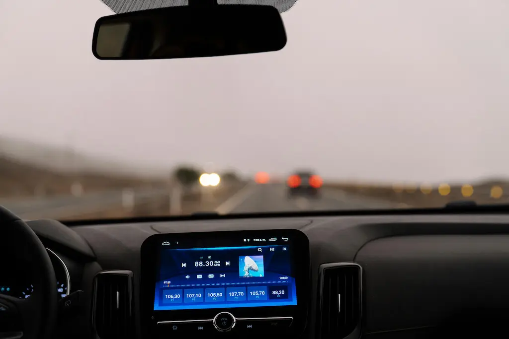

2026'da Otonom Sürüş: Hayal mi, Gerçek mi?

Otonom sürüş teknolojisi, son on yılda dünyanın en büyük otomobil üreticilerinin ve teknoloji devlerinin üzerine milyarlarca dolar döktüğü bir yarışa dönüştü. Peki 2026 itibarıyla gerçekte neredeyiz? Sürücüsüz arabalar hayal olmaktan çıktı mı?
Bu yazıda, otonom sürüşün bugünkü gerçekliğini, Waymo ve Tesla gibi öncü şirketlerin son durumunu, hangi ülkede ne kadar ilerleme kaydedildiğini ve bizi bekleyen önümüzdeki yılları detaylıca ele alıyoruz.
2026 itibarıyla kamuya açık yolda yasal olan en yüksek otonom seviye
Almanya, ABD ve Japonya'da sınırlı koşullarda geçerli
Otonom Sürüş Seviyeleri Nedir?
SAE International tarafından tanımlanan 0'dan 5'e kadar altı otonom sürüş seviyesi bulunuyor. Her seviye, araçların ne kadar bağımsız hareket edebildiğini gösteriyor:
Seviye 0–2: Sürücü Asistanı
Sürücü her zaman aktif olmalı. Sistem yalnızca yardımcıdır.
- Şerit takip sistemi (LKAS)
- Adaptif hız sabitleme (ACC)
- Acil frenleme yardımı
- Park yardımı
- Tesla Autopilot (Seviye 2)
Durum: Yaygın olarak mevcut, satışta
Seviye 3: Koşullu Otomasyon
Belirli koşullarda araç kendi kendine sürer; sürücü devreye girebilir.
- Honda Legend (Japonya) – yasal
- Mercedes Drive Pilot – otoban
- BMW PersonalPilot – sınırlı
- 60 km/s altı hız sınırı
- Belirli ülkelerde onaylı
Durum: Sınırlı pazarda aktif, 2026
Seviye 4–5: Tam Otonom
Araç her koşulda kendi kendine sürer; sürücü gerekli değil.
- Waymo One (robotaksi hizmeti)
- Cruise (GM) – sınırlı bölgeler
- Baidu Apollo – Çin pazarı
- San Francisco, Phoenix aktif
- Henüz genel kamuya açık değil
Durum: Pilot bölgelerde ticari hizmet
2026'da Öne Çıkan Şirketler
| Şirket | Teknoloji / Ürün | Seviye | Durum (2026) |
|---|---|---|---|
| Waymo (Google) | Waymo One Robotaksi | Seviye 4 | ABD'de 5+ şehirde aktif |
| Tesla | Full Self-Driving (FSD) v13 | Seviye 2–3 | Küresel güncelleme devam ediyor |
| Mercedes-Benz | Drive Pilot | Seviye 3 | Almanya ve ABD'de yasal onay |
| Baidu | Apollo Go | Seviye 4 | Çin'de 10+ şehirde ticari hizmet |
| Honda / GM Cruise | Origin Robotaksi | Seviye 4 | Pilot program devam ediyor |
| Mobileye (Intel) | EyeQ Ultra Chip | Seviye 3+ | OEM entegrasyonu 2026'da yoğunlaşıyor |
Tesla FSD: Hâlâ Vaatler Mi Gerçeklik Mi?
Tesla'nın Full Self-Driving (FSD) yazılımı, yıllardır "yakında tam otonom" sözüyle gündemde. 2026 itibarıyla FSD v13 ile araçlar şehir içi sürüşlerde ciddi ölçüde bağımsız hareket edebiliyor; ancak her koşulda sürücünün hazır bulunması yasal zorunluluk olmaya devam ediyor.
Tesla'nın geliştirdiği yapay zeka tabanlı görüntü işleme sistemi (Tesla Vision), LIDAR sensör kullanmayan tek büyük oyuncu olması nedeniyle sektörde tartışmalı. Şirket, kamera + sinir ağı kombinasyonuyla Seviye 3 sertifikasyonu almak için Almanya'da başvuruda bulunmuş durumda.
Waymo: Gerçek Anlamda Robotaksi
Waymo One, 2026 itibarıyla San Francisco, Phoenix, Los Angeles ve Austin'de sürücüsüz (güvenlik şoförü olmadan) ticari hizmet veriyor. Günde 50.000'den fazla seyahat gerçekleştiren Waymo, sektörün en olgun Seviye 4 çözümü konumunda.
Waymo'nun 10 milyon km'yi aşan güvenlik sürüş verisi ve insan sürücülere kıyasla çok daha düşük kaza oranı, otonom sürüşün "hayal değil gerçek" olduğunun en güçlü kanıtı. Şirket 2026'da Atlanta ve Miami'ye de genişliyor.
Otonom Sürüşün Önündeki Engeller
⚖️ Yasal Boşluklar
Otonom araç kaza yaptığında kimin sorumlu olacağı henüz net değil. Ülkeler arası farklı mevzuat, küresel yayılımı yavaşlatıyor.
🌧️ Kötü Hava Koşulları
Yoğun yağmur, kar ve sis, sensörleri ve kameraları olumsuz etkiliyor. Kuzey ülkelerinde güvenilirlik hâlâ yetersiz.
🏙️ Karmaşık Şehir İçi Trafik
İstanbul veya Mumbai gibi kaotik şehirlerde otonom sistemler düşük performans gösteriyor. Pek çok senaryo eğitim verisinde yok.
💸 Maliyet
LIDAR sensörler hâlâ pahalı. Tam otonom araç fiyatı, ortalama tüketicinin bütçesinin çok üzerinde seyrediyor.
🔒 Siber Güvenlik
Bağlantılı ve otonom araçlar, bilgisayar korsanlığı ve uzaktan saldırı risklerine maruz. Yazılım güvenliği kritik öneme sahip.
🧠 Yapay Zekanın Sınırları
Beklenmedik senaryolarda (hasar görmüş yol işaretleri, insanların öngörülmez hareketleri) yapay zeka hâlâ zorlanıyor.
Otonom Sürüş Zaman Tüneli
Waymo, San Francisco ve Phoenix'te güvenlik şoförsüz hizmet başlattı. Tesla FSD v12, yapay zeka tabanlı yeni mimariye geçti. Çin'de Baidu Apollo Go 100.000 seyahati aştı.
Tesla "Cybercab" robotaksisini ABD'nin iki eyaletinde pilot olarak başlattı. Mercedes Drive Pilot, California'da yasal onay aldı. AB, Seviye 3 için ortak standart yayımladı.
Waymo 5 yeni şehre açıldı. Japonya ve Güney Kore Seviye 3 yasal çerçevesini tamamladı. Mobileye EyeQ Ultra çipli yeni OEM araçlar piyasaya çıktı. Otonom kamyon denemeleri otobanlarda devam ediyor.
Seviye 3 özellikler orta segment araçlara ineceği öngörülüyor. Robotaksi hizmetleri Avrupa'ya yayılmaya başlayacak. Otonom lojistik araçları kısa mesafeli teslimat için kullanımda.
Büyük şehirlerde robotaksi hizmetlerinin yaygınlaşması bekleniyor. Özel araçlarda Seviye 4 özelliklerin premium segmentte standart olması hedefleniyor. Tam Seviye 5 hâlâ belirsizliğini koruyor.
Otonom Sürüş Türkiye'de Nerede?
Türkiye'de otonom sürüş teknolojisi henüz araştırma ve düzenleme hazırlığı aşamasında. Karayolları Genel Müdürlüğü ve Sanayi Bakanlığı, AB standartlarıyla uyumlu mevzuat çalışmaları yürütüyor. Togg, Seviye 2+ özelliklerle üretimini sürdürmekte olup 2027-2028 hedef takviminde Seviye 3 yetenekler planlanıyor.
İstanbul ve Ankara gibi yoğun şehir trafiğindeki karmaşıklık, Türkiye'nin otonom sürüş testleri için önemli bir stres testi ortamı oluşturduğunu gösteriyor. Yerli ve yabancı araştırma grupları bu kentlerde veri toplama çalışmaları yürütüyor.
Sonuç: Hayal mi, Gerçek mi?
2026 itibarıyla otonom sürüş hem hayal hem gerçek: Belirli şehirlerde ve kontrollü koşullarda Seviye 4 teknoloji çalışıyor; ancak her türlü hava koşulunda, her ülkede ve her yolda güvenilir biçimde işleyen tam otonom araçlar hâlâ uzakta.
Analistlerin büyük çoğunluğuna göre Seviye 4'ün geniş kesimlere erişeceği yıl
Waymo'nun kanıtladığı gibi, otonom sürüş mümkün; ama ölzeklenmesi yasal, altyapısal ve ekonomik engellere takılıyor. Eğer 2026 soru işareti ise, 2030 çok daha güçlü bir cevap sunacak.
Türkiye açısından bakıldığında, şimdilik Seviye 2 asistan sistemleri tüketicilere ulaşmış durumda. Otonom geleceğe hazırlık için ise hem yasal altyapının hem de şehir içi haritalamanın güçlendirilmesi gerekiyor.
Siz sürücüsüz bir arabaya binmeye hazır mısınız? Otonom sürüş teknolojisindeki bu hızlı değişimi birlikte takip etmeye devam edeceğiz!
Otonom sürüş hakkında ne düşünüyorsunuz? Güvenli buluyor musunuz? Görüşlerinizi paylaşın.